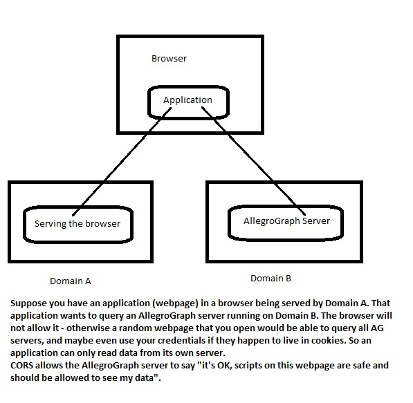

Introduction
The AllegroGraph server is the running program which manages the various AllegroGraph repositories (also occasionally referred to as triple-stores or databases). The server must be set up as described in Server Installation.
This document describes server configuration below and server control further below.
Argument notation
The directives that go in the configuration file generally require an argument. We generally show the type of argument expected. Here are some common argument types:
BOOLEAN: allowable values are
yesandno(and alsoy,t,true, or1foryesandn,nil,falseor0forno). Values are case-insensitive.PATHNAME: a pathname, usually to a directory and usually an absolute pathname.
FILE-PATHNAME: a pathname (usually absolute) of a file.
INTEGER: an integer indicating the number permitted (such as for
Backends) or a numeric label (such as forPort). Negative integers and 0 are not allowed unless the description says otherwise.TIME: a non-negative integer, which can be labeled with a units indicator. An unlabeled integer is interpreted as a number of seconds. Units indicators are 's', 'h', and 'd', meaning seconds, hours, and days. So 100 and 100s both mean one hundred seconds, 25h is twenty-five hours and 3d is three days.
REGEXP: a regular expression. Regular expression syntax is described here. Regular expressions can be specified to make case-insensitive matches.
VALUE: a value specified in the directive description.
Some directives (usually those identifying things) can be specified multiple times meaning any of the specified values can be used. The directive description will say whether it can be specified more than once. A few directives can have multiple values on one line, usually comma separated.
Directive values must not be quoted. Spaces are not allowed in directive values.
Server configuration
The AllegroGraph server requires a configuration file in order to start up. Usually, this file is specified using the --config command-line argument. A minimal file could look like this:
SettingsDirectory /tmp/ag4/settings
SuperUser test:xyzzy
<RootCatalog>
Main /tmp/ag4/root
</RootCatalog> An AllegroGraph configuration file consists of a set of top-level directives, and one or more catalog definitions. The syntax is straight-forward: directives (both top-level and within a catalog definition) consist of an alphanumeric word, whitespace, and then the value of the directive. Indentation is ignored. A directive can span multiple lines by escaping newlines with a back-slash, in which case both the newline and the backslash will be treated as if they are not there. Catalog definitions are delimited by pseudo-XML markers like <RootCatalog>. Lines starting with a # are treated as comments. Each directive defining a parameter must be on its own single line (or multiple lines joined by backslashes as described above). Specifying more than one parameter on a single line will result in an error, or, possibly, in the first parameter being defined incorrectly and the remaining ones on the line not being defined at all.
The directories named in this file must either already exist and be writeable by the user running the server, or that user must be able to create them himself. You'll usually not want to use temporary paths as in the example, of course.
BaseDir directive
Any relative path in the config file is initially resolved with respect to the directory containing the config file. If you specify another directory using the BaseDir directive, all subsequent relative paths are resolved relative to that directory. BaseDir can be specified as often as you like and can itself be a relative pathname (which will be resolved with using the BaseDir value in use, or, if not previously specified, with respect to the directory containing the config file). If BaseDir is specified multiple times, relative pathnames in other directives are resolved with respect to the most recent BaseDir value.
BaseDirPATHNAME- A directory pathname which will be used to resolve relative pathnames in subsequent directives in the config file. Can be specified multiple times in the config file, with new values replacing older ones. See just above for more details.
Top-level directives
SettingsDirectoryPATHNAME- Required setting. Specifies the directory in which the server stores persistent information such as user accounts.
AccessLogEnabledBOOLEAN- A boolean (
yes/no) that can be used to enable logging of successful HTTP(S) requests to a dedicated log file. AccessLogDirPATHNAME- Directory in which the HTTP access log files are written. Default is
LogDir. AccessLogFilePatternVALUE- A file name pattern with
strftimestyle directives, to set up log rotation for the HTTP access log. The pattern may contain spaces. Default isaccess-%Y%m%d.logcontaining year, month and date. AccessLogEntryFormatVALUE- A log format pattern using Apache style directives. See Apache documentation for a list of possible directives, most of which are supported. The pattern may contain spaces. In case of invalid or unsupported directives a warning will be logged to
agraph.log. The logged value for unsupported directives (e.g.%l) is a dash:-. Default is the NCSA extended/combined log format: `%h - %u %t "%r" %>s %b "% i" "% i"` AllowHTTPBOOLEAN- A boolean (
yes/no) that can be used to turn off HTTP access to the server. Default isyes. AuditingBOOLEAN- A boolean (
yes/no) that can be used to turn on auditing. Default isno. BackendsINTEGER- Specifies the maximum number of processes spawned to handle HTTP requests (note that session processes do not count toward this limit). Default is 10.
EvalAllowedBOOLEAN- A switch to turn off Evaluate arbitrary code permissions globally. If it is
yes(the default), then the Evaluate arbitrary code permission bits are in effect. If it isno, then arbitrary code evaluation is disabled for all users (including superuser) regardless of the value of a user's actual permissions. HostNameHOST- Determines the host on which the HTTP server listens. Can be left out to have the server listen on all interfaces. Set to
localhostto listen only locally. HTTPProxyVALUE- This parameter can be used to make HTTP requests made by the server (for example, when a SPARQL query loads data from an external URL) go through a proxy. The VALUE syntax is [USER:PASSWORD@]HOST[:PORT], where the square brackets indicate optional portions. PORT defaults to 80. A USER and PASSWORD are necessary when the proxy requires authentication.
HTTPNoProxyVALUE- When proxying is enabled with the
HTTPProxydirective, this parameter can be used to list exceptions. HTTP requests made by the server to domains that match one of the suffixes specified with HTTPNoProxy are never proxied. HTTPNoProxy can be specified multiple times, for example:HTTPNoProxy mydomain.com HTTPNoProxy otherdomain.com With the above configuration, requests made by the server for
mydomain.com,otherdomain.com,sub.mydomain.comornotmydomain.comwill not be proxied.IP addresses can be specified and they are subject to the same string suffix matching rule as domain names are. Crucially, that means that a request made for a particular domain name will not match a rule that specified an IP address even if the domain name resolves to the IP address. It is usually the best to use entire IP addresses:
HTTPNoProxy 192.168.0.1- Requests to
localhostand127.0.0.1are never proxied. HTTPWorkersINTEGER- The number of initial HTTP workers to be started by the AllegroGraph server. The default is 50. The number should be larger than the number of backends (see
Backendsabove) plus anticipated frontend sessions (used, for example, by Webview). Too few workers may cause long-running requests (like opening a repository) to delay other concurrent requests.
LogDirPATHNAME- Specifies the directory where the server log files are written. The primary log file is agraph.log, the secondary file is agraph-fallback.log. The secondary is only used when writing to the primary fails. The secondary file is preallocated to a size of 1MiB, so some log messages can be written even if the filesystem is full. On server startup or if writing to the primary becomes possible again, the contents of the secondary log file are automatically appended to the primary and the secondary log file is reinitialized.
MemoryCheckWhenVALUE- A 'memory release specification'. It can be used multiple times. Each description must be in the form
name:valuewhere name can bequery,transactionortimeand value must be a number of items to run between checks (for query and transaction) or a delay in seconds (for time). MemoryReleaseThresholdINTEGER- A size specifying the threshold at which a memory release will occur. The size can be specified in gigabytes (e.g.
3"), megabytes (e.g.3000m), kilobytes (e.g.3000000k) or bytes (e.g.3000000000).
PidFileFILE-PATHNAME- A file to which the server writes out its process id.
PortINTEGER- If supplied, must be an integer. Used to set the port on which the daemon runs its HTTP server. When not given, this defaults to
10035. QueryEngineENGINE-SPECIFIER- Specifies the query processor used for SPARQL queries. This parameter can be overridden for specific queries (in an API specific manner). See the discussion in the SPARQL documentation for more details on the available engines and on how to choose amongst them.
QueryOptionNAME=VALUE- A query option specification. It can be used multiple times. Each specification is equivalent to a query prefix option. The global configuration directive "QueryOption NAME=VALUE" is the same as the query prefix option "PREFIX franzOption_NAME:
QueryOption logQuery=yes ReplicationPortsINTEGER-RANGE- If given, must be an integer range (e.g. 13000-13020). When using replicas (see Replication and Warm Standby), the replication primary requires a separate listening port for each replica. The operating system will choose an available port for each replica (when the replica is set up) if no value is given for this option, and that will always work. However, if there is a firewall between the replication primary and (any of) the replicas, the firewall administrator may need to configure the firewall to allow incoming connections from the replicas to the primary. That configuration process can be aided by limiting the range of ports which can be used, and that is what this parameter does. If a range is specified, only those ports will be used by replicas. Any replica which might become a primary should have this parameter also specified in its configuration exactly as it is for the primary. Note that if no port in the range is available when setting up a replica, setting up the replica will fail. Therefore, the size of the range of ports should be at least the maximum expected number of replicas.
RunAsUSERNAME- Have the server, if started by root, run as the given user instead (defaults to
agraph).
HttpTraceFILE-PATHNAME- If given, it is the name of the log file to which HTTP traffic is to be dumped.
HttpTraceOptionsOPTIONS- If given, it is a comma separated list of options. Options starting with the character + turn on the corresponding log category. Those starting with - turn them off. Use the max-message-size= option to truncate overly long messages. The default is
+xmit,max-message-size=1000. The available log categories are listed in the AllegroServe documentation. -
SMTPHostSMTP-CONFIGURATION Defines a named SMTP configuration which can be used to send emails. Multiple
SMTPHostdefinitions are allowed.With
SMTPHostone can associate a login name, password, port, etc with a server. The following example defines theSMTPHostnamedgmail:SMTPHost gmail \ server="smtp.gmail.com", ssl=true, starttls=false,\ from="me@gmail.com", login="me@gmail.com", \ password="somepassword"- The following options are supported by
SMTPHost:server (string): the hostname or IP address of the server (example:
"smtp.gmail.com", or"127.0.0.1"). This is a required parameter.port (integer): defaults 25 for non-SSL, 465 for SSL (example:
993)ssl (boolean): defaults to false (example:
true)starttls (boolean): defaults to false (example:
true)from (string): the email address to which the
From:header of emails sent via this SMTPHost will be set. This is a required parameter.login (string): the user on the remote server (example:
"john@gmail.com")password (string): the password corresponding to
loginpassword-command (string): a string suitable to be executed as a shell command. The specified command should output a single line containing the password to stdout. This is intended to avoid storing plaintext passwords in the configuration file.
SPARQLBaseURLURL- If given, the HTTP server will use this value as the base-url when parsing SPARQL queries. When not given, the URL of the request is used instead.
SuperUserNAME:PASSWORD- If given, must be a string in
name:passwordformat. The server will ensure, on startup, that a superuser with this name and password exists. Note that this means anyone that can read your configuration file has full access to the server. It is recommended to use the server setup script to create a superuser instead, or if you do use this directive, remove it after the first run of the server has created the user. -
TempDirPATHNAME - Specifies the directory in which AllegroGraph may create temporary files. Defaults to the system's designated temporary directory (typically
/tmp).
TransactionSemanticsVALUE- Either
sesame-2.6(the default) orsesame-2.7. It controls whether a new transaction is started automatically or an explicit begin is necessary. See Transaction handling semantics for more information.
Session directives
A session is a user-specific connection to the AllegroGraph server. Because it is controlled by a single user, it can be transactional (changes are not permanently added to the database until committed and rollbacks are supported) and it is suitable for loading user-specific scripts. Sessions can also access several stores in a federation.
Sessions can only be created by users who have persmission to start sessions (see Managing Users in the WebView Guide for information on user permissions).
Those users can start sessions from AGWebView using the HTTP/REST interface, in Python), and in Java.
The following configuration directives affect sessions:
SessionHostVALUE- If given, must be the server's host name or IP address for use in the URLs returned upon session creation. Useful when deploying a load balancer (like Amazon's Elastic Load Balancer) for sending the SessionHost string in the returned session URL instead of echoing the load balancer's host name from the client request.
SessionPortsINTEGER-RANGE- If given, must be an integer range like
8000-8020. Defines the ports that will be used for sessions. Useful when these need to be opened in a firewall or similar. When not specified, random ports will be used.
The next two directives control how long a session can be idle before it is terminated by the system. When starting a session with AGWebView (described here), a timeout cannot be specified, so the value of DefaultSessionTimeout is the idle timeout for any AGWebView session. Idle timeouts can be specified for sessions started with the HTTP/REST interface, Python, or Java (in all cases setting the lifetime parameter/argument). The value specified must be less or equal to than the MaximumSessionTimeout. Neither DefaultSessionTimeout nor MaximumSessionTimeout can be determined programmatically so users should ask the database administrator for those values if needed.
DefaultSessionTimeoutINTEGER- Sets the idle timeout (aka lifetime) to use for sessions which are created without specifying one. The default value is 300 seconds (5 minutes). This value is used by all sessions created in AGWebView (described here) because AGWebView does not permit specifying a different value.
MaximumSessionTimeoutINTEGER- Sets the maximum idle timeout (aka lifetime) that may be specified when creating a session. Any attempt to create a session with a timeout larger than this value will fail. The default value is 21600 seconds (6 hours).
Top-level directives for SSL client certificate authentication
In addition to authenticating remote users via HTTP Basic authentication, users can also be authenticated using SSL certificates. See the comments about authenticating users in the introduction of the Security Implementation document.
The following directives are used to enable SSL client authentication.
SSLCertificateFILE-PATHNAME- This must be the path of a file containing a server certificate and private key, PEM-encoded. This parameter is required when
SSLPortis set. SSLPortINTEGER- An integer specifying a port number. If given, an SSL HTTP server will be run on this port.
SSLCAFileFILE-PATHNAME- This must point to a file containing one or more PEM-encoded certificates of trusted certificate authorities (CAs). A client certificate will be trusted if it has been signed by a CA within this file. This setting is required to enable certificate-based client authentication.
SSLCRLFileFILE-PATHNAME- If supplied, this must point to a file containing a PEM-encoded certificate recovation list (CRL). If a client certificate is received which has a serial number matching one in the CRL, the certificate (and therefore the entire SSL connection) will be rejected. This setting is optional.
SSLClientAuthUsernameFieldVALUE- The "Subject" field of a client certificate supplies the identity of the client. The subject is typically composed of several parts, for example:
Subject: C=US, ST=California, L=Oakland, O=Franz Inc., OU=Developers, CN=Joe Smith, emailAddress=joe.smith@franz.com - This setting specifies which part of the Subject field of the client certificate should be used to identify the user to AllegroGraph. The setting may be CN (the default) or emailAddress. The value of the specified part will be used to perform a lookup in the user database (e.g., Joe Smith or joe.smith@franz.com depending on the
SSLClientAuthUsernameFieldsetting). SSLClientAuthRequiredBOOLEAN- This setting determines if client certificate validation is required or optional. If yes, all SSL requests must contain a valid client certificate. If no (the default), then SSL requests without a client certificate are allowed. In this case, AllegroGraph falls back to HTTP Basic authentication.
Top-level directives for account management
AuditEventsToEmailVALUEA directive that instructs the system to send notification emails to a specified address when various audit events occur. This option can be specified multiple times to cause emails to be sent to multiple addresses.
The format for this directive is
AuditEventsToEmail to="email", [smtphost="smtp-host-name"], \ events="comma-separated events"smtp-host-name- The name of theSMTPHostdefinition to be used. If only one SMPTHost is defined, this option can be left unspecified.emailis an email address. Events can be any audit events (see Audit event types).
- For example, here is a valid specification, assuming an
SMTPHostnamed gmail has been defined:AuditEventsToEmail to="agadmin@gmail.com", smtphost="gmail", \ events="expirePassword,addUser,deleteUser" - If there is only one
SMPHostdefined, smtphost can be left unspecified:AuditEventsToEmail to="agadmin@gmail.com", \ events="expirePassword,addUser,deleteUser" - See Auditing email notifications for more information.
AccountExpiry- The time since the last authenticated activity of a user after which the account is permanently deleted. This option does not affect users with superuser permission. The default is that accounts do not expire.
AccountUnsuspendTimeout- The time after which suspended accounts are unsuspended automatically. See
MaxFailedLogins. LoginTimeout- A time (value like
10s,5m,1h). If set, AGWebView login sessions are timed out after this amount of idle time. The default is no timeout.
MaxFailedLogins- The number of failed logins in a row after which the account is suspended. Suspended accounts can be unsuspended explicitly by superuser or automatically if
AccountUnsuspendTimeoutis set.
PasswordChangeAllowed- A boolean (
yes/no) that can be used to control whether users can change their own password. The default isyes. Ifno, then only superuser can change passwords. PasswordExpiry- The time since the last password change after which the password will be expired. One cannot login with an expired password, it can only be used to change the password.
PasswordExpiryGrace- The time since password expiry after which the account is disabled. It's not possible to log in or change the password with a disabled account. Only the administrator can reenable accounts. This option does not affect users with superuser permission.
PasswordMinLength- The minimum number of characters all new passwords must have. The default is 0.
PasswordMinUppercaseChars- The minimum number of uppercase characters all new passwords must have. The default is 0.
PasswordMinDigitChars- The minimum number of digit characters all new passwords must have. The default is 0.
PasswordMinSpecialChars- The minimum number of non-alphanumeric characters all new passwords must have. The default is 0.
SuperUserCanAccessAllData- A boolean (
yes/no) that controls whether superuser bypasses normal permission checks for triples data. If it is on (the default), then superuser will have read/write access to all repositories. If it is turned off, then superuser needs to be granted access to repositories. This is most useful when auditing is enabled and any change to user permissions is logged.
Top-level directives for multi-master replication clusters
Four top-level directives affect multi-master replication clusters, described in the Multi-master Replication document. There are settings which affect how replication cluster instances are kept in sync. These directives specify the default values of these settings. Setting values may be overridden by commands which create a replication cluster and settings can also be changed once a replication cluster exists. The meaning and effect of a setting is described in the Instance Settings section of the Multi-master Replication document. Changing the settings after a cluster has been created is also described in that section. The directives are:
durability- See the description of the Durability setting for information on this directive.
distributedTransactionTimeout- See the description of the Distributed Transaction Timeout setting for information on this directive.
transactionLatencyCount- See the description of the Transaction Latency Count setting for information on this directive.
transactionLatencyTimeout- See the description of the Transaction Latency Timeout setting for information on this directive.
More on controlling memory usage
While processing a query, backend processes may allocate memory from the operating system. When a previously allocated memory area is no longer used, the processes normally do not return it to the operating system, in hopes of reusing it for subsequent queries. However, it may be advantageous to periodically return idle memory to the operating system. The MemoryCheckWhen and MemoryReleaseThreshold configuration parameters allow for this.
Note that while returning memory to the OS makes memory available to other processes, it also incurs the overhead of minor page faults on subsequent allocations in the same process.
Each shared backend and dedicated session tracks its own memory usage. When a check is made the resident set size (RSS) of the backend or session process is compared to MemoryReleaseThreshold. If the RSS is greater than MemoryReleaseThreshold then an effort is made to give back as much memory to the OS as possible.
Since this kind of check is fairly expensive, performing it too often can have a detrimental effect on overall performance. The MemoryCheckWhen directive specifies under what circumstances it should be done. Let's see a couple of examples.
Perform memory check after every 7 queries:
MemoryCheckWhen query:7 Perform memory check after every 2 transactions:
MemoryCheckWhen transaction:2 Perform memory check every 10 seconds:
MemoryCheckWhen time:10 Finally, a complete configuration that would check whether the memory was above the threshold every 10 seconds and after every 2 transactions:
MemoryReleaseThreshold 2g
MemoryCheckWhen time:10
MemoryCheckWhen transaction:2 Note that MemoryReleaseThreshold must be specified whenever MemoryCheckWhen is. If neither of two are specified, then no checks are ever performed.
CORS directives
CORS (Cross-Origin Resource Sharing), if enabled, allows scripts run on a web page from one server to make HTTP requests to the (different) server where AllegroGraph is running. CORS is not enabled by default because if not configured properly, it can introduce security holes. The following directives enable CORS limited as the various options allow. A general tutorial on CORS is available at http://www.html5rocks.com/en/tutorials/cors/. See here in the REST/HTTP interface document for more information.
You may want to use CORS to communicate with the AllegroGraph server if you are writing a web application that will be accessing AllegroGraph but will not be served from the same domain that the server uses. This image shows a possible configuration:

CORS support is enabled if the configuration file contains at least one of the following directives: CorsAllowAll, CorsAllowOrigin, CorsAllowRegex.
The following configuration file directives are used to configure CORS:
CorsAllowAllBOOLEAN- If set to 'yes' then requests from all origins will be accepted. When
yes, values forCorsAllowOriginandCorsAllowRegexare ignored. The default isno. CorsAllowOriginDOMAIN- Allow the specified origin (i.e. domain) to issue cross-site requests. Only one domain can be specified per entry but this directive can be specified multiple times. Domain names are case-insensitive.
CorsAllowRegexREGEX- Allow all origins that match the given regular expresion to issue cross-site requests. Only one regular expression is allowed per entry but this directive can be specified multiple times. Regular expression syntax is described here. Regular expressions can specified to make case-insensitive matches.
The following directives affect how CORS requests are handled when they are allowed.
CorsUrlRegexREGEX- Only enable CORS for target URLs that match the given regular expression. If this option is not specified, all URLs are allowed. If it is specified then the associated regular expression is compared to URLs being requested and allowed only if they match. This directive can be specified multiple times and if it is, CORS will be enabled for URLs that match at least one of the supplied regexes. Regular expression syntax is described here. Regular expressions can specified to make case-insensitive matches.
CorsAllowMethodsMETHOD-LIST- A space or comma separated list of allowed methods for cross-origin requests. List values are case-insensitive. The default is: DELETE GET OPTIONS PATCH POST PUT
CorsAllowMethodMETHOD- A single HTTP method to be added to
CorsAllowMethods(defined above). TheCorsAllowMethoddirective can be specified multiple times. CorsAllowHeadersHEADERS-LIST- A space or comma separated list of headers allowed in cross-site requests. Headers are case-insensitive. The default list is:
Accept Accept-encoding Authorization Content-type Dnt Origin User-agent
CorsAllowHeaderHEADER- A single HTTP header to be added to
CorsAllowHeaders(defined above). This directive can be specified multiple times. CorsExposeHeadersHEADER-LIST- A space or comma separated list of custom response headers that should be readable by cross-site requests. The default is empty.
CorsExposeHeaderHEADER- A single HTTP header to be added to
CorsExposeHeaders(defined above). This directive can be specified multiple times. CorsPreflightMaxAgeINTEGER- Specifies how long (in seconds) a response to a preflight request should be cached by the browser. The default is 86400 (24 hours). If set to zero the corresponding HTTP header
Access-Control-Max-Agewill not be sent. CorsAllowCredentialsBOOLEAN- If set to 'yes' then cross-origin requests will be allowed to contain authentication info, such as cookies and auth headers. The default is 'no'.
Catalog definitions
Catalogs are locations on disk where AllegroGraph keeps its repositories. These locations are specified in the configuration file, along with some optional default settings for stores in the catalogs. Most of the time, you will want to specify all catalogs directly in the configuration file, but it is also possible to enable dynamic catalogs, which can be created and deleted through the HTTP interface (as described in HTTP Protocol - SPARQL Endpoint).
Catalog definitions in the server configuration files serve as templates for creating databases. The parameters defined in the catalog definition will be copied to the database when it is created. Changes to the catalog definition do not influence the settings of existing databases. In order to modify parameters of existing databases, the file 'parameters.dat' in the database 'Main' directory must be edited and the database be restarted.
There are three types of catalog definitions that can occur in an AllegroGraph configuration file: a root catalog, named catalogs, and a dynamic catalog specification. The first was seen in the example above (<RootCatalog> ... </RootCatalog>), and is used to determine where stores live that do not have a catalog specified. Named catalog specifications look similar:
<Catalog temporary>
Main /tmp/catalog
</Catalog> The first entry specifies the catalog name, temporary in the example. Catalog names can contain any characters except slashes, backslashes, colons, and tildes. The names root and system are reserved and may not be used. (root causes conflicts with the RootCatalog already described. system is reserved for certain system recording purposes.)
The catalog name can then be used to specify the catalog when creating or accessing repositories.
Finally, a dynamic catalog definition is used to provide the settings for catalogs created over HTTP. If no dynamic catalog is defined, this feature is disabled.
<DynamicCatalogs>
Main /tmp/dynamic
</DynamicCatalogs> The directory (as well as any other catalog directories, see below) given for dynamic catalogs will be extended with a catalog name when such a catalog is created. For example, given the above configuration, a dynamic catalog named scratch would end up in /tmp/dynamic/scratch.
Catalog directives
Some of the directives allowed within a catalog definition (those marked as inheritable) can also be specified at the top-level, where they act as a default value inherited by catalogs which don't explicitly specify that setting.
MainPATHNAME- Required for every catalog. Specifies the directory in which the repositories for the catalog are stored.
TransactionLogDirPATHNAMESpecifies the directory in which transaction log subdirectories will be created for repositories in this catalog. The directory will be extended with the name of a repository. For example, if
TransactionLogDiris/tmp/tlogs, then transaction logs for repositoryexamplewill be stored in/tmp/tlogs/example. This parameter is optional and defaults to the value supplied for theMainparameter.See the line in the example below
TransactionLogDir /mnt/disk3/ag4-transaction-logswhich says transaction logs should be placed in the /mnt/disk3/ag4-transaction-logs/[repository-name]/ directory.
The value of this directive can affect performance. See the discussion in the Performance Tuning document.
StringTableDirPATHNAME- Specifies the directory in which string table subdirectories will be created for repositories in this catalog. See
TransactionLogDirfor information on how directory names are constructed. This parameter is optional and defaults to the value supplied for theMainparameter. The value of this directive can affect performance. See the discussion in the Performance Tuning document.
StringTableSizeINTEGER- the value must be an integer, optionally followed by a multiplier (k=2^10 or m=2^20). The value determines the minimum number of slots to use for the hash table used to map UPIs to their corresponding strings. The actual number of slots configured is the supplied value rounded up to the nearest power of two, with a minimum of 1M (1,048,576). The default number of slots is 16,777,216 (16M). The maximum possible number of slots is 536,870,912 (512M). Increasing the number of slots may result in better insert and lookup performance for repositories with a lot of unique strings. Each slot takes 4 bytes of memory. Checkpoints will take longer the more slots there are as the information stored in the slots is recorded in the transaction log during checkpoints. As said, the value of this directive can affect performance. See the discussion of directives that affect performance in this section of the Performance Tuning document.
StringTableCompressionVALUE inheritable- If given, the value must be one of
none(the default),lzo(same aslzo999),lzo1,lzo999(same aslzo), orzlib.lzo999compresses more thanlzo1but takes more time. The string table compression method can only be set when a repository is created. See the discussion of this directive here in the Performance Tuning document.
ExpectedStoreSizeINTEGER inheritable- This is the number of triples one expects to have in the store. It is used by the server to select suitable values for things like internal table sizes. Most of the time, you should only worry about this when trying to squeeze out more performance. Setting it too high can lead to some wasted resources, setting it too low can result in sub-optimal performance and setting it much low (much less than the maximum effective value and less than one 25th of the real size) can cause enormous index management overhead and lead to extreme loss of performance on a continuously evolving store. The maximum effective value is one billion triples. Stores can be much bigger, of course, but values larger than one billion do not affect initial internals. As said, the value of this directive can affect performance. See the discussion of directives that affect performance in this section of the Performance Tuning document.
MaxRecoveryTimeTIME inheritable- A time (with a value like
10s,5m,1h). This parameter, if set, enables dynamic checkpointing for a database. By default, AllegroGraph will write a checkpoint in regular intervals, as configured by theCheckpointIntervalparameter. If dynamic checkpointing is enabled, a checkpoint will be written whenever recovery from the transaction log file would exceed the time to whichMaxRecoveryTimeis set. This is useful on databases with little write activity. Note that theMinimumCheckpointIntervalis still observed.
CheckpointIntervalTIME inheritable- A time (with a value like
10s,5m,1h) that is used to determine the amount of time between checkpoint writes for the store. A higher value increases the recovery time but might make checkpoints happen less frequently. The value of this directive can affect performance. See the discussion in the Performance Tuning document. MinimumCheckpointIntervalTIME inheritableA time (with a value like
10s,5m,1h) that is used to determine the minimum period that must elapse between two checkpoints. This parameter defaults to whateverCheckpointIntervalhas been set to or, ifMaxRecoveryTimehas been set, to 5m (five minutes).Regardless of the value of
MinimumCheckpointIntervalandCheckpointInterval, a checkpoint will always occur after a new transaction log file is created (seeTransactionLogSizesetting).TransactionLogSizeINTEGER inheritable- A size (an integer, perhaps labeled with 'k' for kilobytes, 'm' for megabytes, or 'g' for gigabytes, for example
10mfor ten megabytes) that determines how big individual transaction log files are allowed to grow. When a transaction log size meets or exceeds this size, a new transaction log file will be created. The maximum is just under 4g. TlogSyncMethodVALUE- This parameter specifies the synchronized writing method for transaction logs. Three methods are supported: ODIRECT, SYNC, and fsync. The default (if this parameter is unspecified) is ODIRECT and that is the recommended choice on ext3 file systems. For catalogs residing on non-ext3 file systems, the other choices may yield performance benefits. (You will potentially see performance degradation in checkpointing. If that takes longer than expected and you are using a non-ext3 filesystem, try the other allowable values.)
DesiredTlogFilesINTEGERThis parameter specifies the number of transaction log files which should be preallocated at database creation time. The default value is 2. Specifying a larger value helps lower the probability of additional transaction log files being created during commits.
Note: The circumstances under which the number of tlog files may grow larger than
DesiredTlogFilesare if there is a long-running backup, transaction log archiving is running slowly, or if warm standby replication is running slowly or stalled. When possible, AllegroGraph will reduce the number of transaction log files back down to DesiredTlogFiles.InstanceTimeoutTIME inheritable- The time (a value like
10s,5m,1h) a database instance will stay open without being accessed. The default is one hour. Starting a database instance can be time consuming. By keeping idle instances around this directive allows for trading off memory for lower worst case latency on database access. Note that this value is advisory; AllegroGraph checks for idle database instances intermittently so a given instance may linger longer than theinstanceTimeout.
Style2IndicesINDEX-NAME-LIST- The value must be a single index name (e.g.
psogi) or several space or comma-separated index names, ornone. This line, for example, specifies two indices to be of style 2:Style2Indices spogi gspoi - Index styles are discussed here in AllegroGraph Indices. Style 2 indices are better for queries that result in a single triple while style 1 indices are better for more general queries. Any index specified on this line will be a style 2 index while all other indices will be a style 1 index. add-index and the REST interface do allow for specifying the style of the index being created regardless of the value of this directive. There are no style 2 indices by default. Unless specified in the directive or explicitly created as a style 2 index by add-index or the REST interface, all indices are style 1 indices.
TransactionLogArchivePATHNAME- This directive specifies a directory for storing archived transaction log files. See Transaction Log Archiving for more details.
TransactionLogRetain- This directive is no longer used and a warning will be signaled if it appears in a configuration file. See Transaction Log Archiving for more details and how to achieve what used to be done by this directive.
TransactionLogReplicationJobname- This directive is no longer used and a warning will be signaled if it appears in a configuration file. See Transaction Log Archiving for more details and how to achieve what used to be done by this directive.
Example Configuration
What follows is a more complete example to demonstrate the various configuration options in more detail.
# Don't allow normal HTTP access, only SSL
Port 10035
AllowHTTP no
SSLPort 10036
SSLCertificate /var/lib/ag4/server.cert
SettingsDirectory /var/lib/ag4/settings
Backends 5
# You can actually remove this after the first server run, to
# reduce the risk of someone finding it here.
SuperUser test:xyzzy
ExpectedStoreSize 100000
SessionPorts 8080-8083
<RootCatalog>
Main /var/lib/ag4/root
</RootCatalog>
<Catalog fast>
ExpectedStoreSize 2000000
CheckpointInterval 1h
Main /var/lib/ag4/fast
StringTableDir /mnt/disk2/ag4-string-tables
TransactionLogDir /mnt/disk3/ag4-transaction-logs
</Catalog>
<DynamicCatalogs>
Main /var/lib/ag4/dynamic
</DynamicCatalogs> Changing database parameters
In some circumstances, it is desirable to modify the settings of an existing database by editing the 'parameters.dat' file in the database main directory. The syntax of this file is similar to that of the server configuration file, but only the parameters that are normally present inside of a catalog definition are allowed.
For example, the 'parameters.dat' file for a database 'demo' created with the 'fast' catalog definition above would look like this:
CheckpointInterval 1h
Main /var/lib/ag4/fast
StringTableDir /mnt/disk2/ag4/fast It might be edited to change the CheckpointInterval. It is also possible to add new file placement rules. When modifying any of the file placement related parameters of a database, care must be taken to make sure that all files that constitute the current database state are still visible to the database. For example, if the StringTableDir directory in the database above should be removed, all files in /mnt/disk2/ag4/fast/demo/ would need to be manually moved into the main directory of the database, /var/lib/ag4/fast/demo/.
Note that resetting some parameters in 'parameters.dat' has no effect. In particular, changing ExpectedStoreSize in parameters.dat does nothing. The only way to change that is to set the option in the configuration file and recreate the database.
When moving around database files, it is important to know that some of these files are sparse, i.e. they contain holes (unallocated blocks). Many file management utilities (like 'cp' and 'tar') can optionally preserve file sparseness, but care should be taken to make sure that copies of database files don't become unexpectedly large after a manual manipulation.
Server control
The method used to start and stop the AllegroGraph server depends on the type of install: an RPM install or installation from a tar.gz file (see Server Installation). The RPM install places files in specific locations. The configuration file agraph.cfg is placed in /etc/agraph/ and you can use /sbin/service to start and stop Allegrograph:
You can start AllegroGraph by running:
/sbin/service agraph start
You can stop AllegroGraph by running:
/sbin/service agraph stop In addition, chkconfig can be used to make AllegroGraph start when the system boots. For example:
chkconfig agraph on You can also use agraph-control with an RPM install.
The tar.gz installation is more flexible, and you choose the AllegroGraph directory as part of the installation process (again, see Server Installation). The typical way to start and stop AllegroGraph installed from a tar.gz file is to use agraph-control.
agraph-control
agraph-control is a script that can be used to start and stop AllegroGraph. It also can process other commands, as described below. agraph-control is located in the bin/ subdirectory of the AllegroGraph directory. The calling template is
agraph-control [options] <command> Control options
The one option to agraph-control is --config. Its value should be the path of the configuration file. The usual location of that file in a tar.gz install is the lib/ subdirectory of the AllegroGraph directory. The usual location in an RPM install is /etc/agraph/. The default name is agraph.cfg.
Thus, with a tar.gz install, you can start the AllegroGraph server with
[Agraph dir]/bin/agraph-control --config [Agraph dir]/lib/agraph.cfg start If --config is not specified, the behavior is as follows:
For an RPM install when not running as root, there is no default and
--configmust have a value.For an RPM install when running as root, the default is /etc/agraph/agraph.cfg.
For a tar.gz install, the default is agraph.cfg in lib/ subdirectory of the AllegroGraph directory.
If the file specified as the value of --config is not found, the AllegroGraph server is not started and a message like the following is printed:
Cannot locate configuration file (tried <supplied path>). If --config is unspecified, and the agraph.cfg file is not found in the default location or you are not running as root with an RPM install, the AllegroGraph server is not started and the following message is printed:
Cannot determine location of configuration file. Please use --config Control commands
The commands to agraph-control are:
- status
- Writes to stdout, "up" if the server is running and "down" if not.
- start
- Start the AllegroGraph server. This has no effect if the server is already running.
- stop
- Stop the AllegroGraph server. This is the normal stop command and it attempts to perform a clean shutdown of all open databases.
- force-stop
- Stop the AllegroGraph server. This is the emergency stop command and open databases may not be cleanly closed.
- restart
- Requests that the server shut itself down, if running, and then start back up again.
AllegroGraph service daemon signal handling
The signals used by the AllegroGraph service daemon are:
- SIGTERM
- for normal stopping, used by the stop command.
- SIGQUIT
- for emergency stopping, used by the force-stop command.
Exit Status
For the status command, a 0 exit status is returned if the server is up, non-zero if the server is down.
For all other commands, the exit status is 0 if the command was executed succesfully, and non-zero if an error is reported during command execution.
The agraph program
agraph-control is a script which launches the actual program, named agraph. While agraph-control is recommended when starting the server, you can use agraph, particularly when you wish to invoke options not available to agraph-control. agraph accepts the following command-line arguments:
--configfile- The location of the configuration file. Defaults to
agraph.cfgin the executable's directory, or, failing that,/etc/agraph/agraph.cfg. (If the configuration file cannot be found, AllegroGraph does not start and prints the message No configuration file found. --log-dirdirectory- Specify where the server log files are written. Overrides the
LogDirdirective. --debug- Start the server in debug mode, which means logging will be more verbose.
--log-levellevel- Set an explicit log-level (debug, info, warn, or error), or specify log-levels per category, for example:
debug,daemon:info,storage:warn. --http-tracefile- Write a log of all HTTP traffic to the file specified.
--http-trace-optionsoptions- A comma separated list of options. Options starting with the character + turn on the corresponding log category. Those starting with - turn them off. Use the max-message-size= option to truncate overly long messages. The default is +xmit,max-message-size=1000. The available log categories are listed in the AllegroServe documentation.
--pid-filefile- Determines where the process id of the server is written. Overrides the
PidFiledirective. --run-asuser- If started as root, run AllegroGraph as the specified user. Overrides the
RunAsdirective. --no-daemonize- If specified, then the service daemon will run in the foreground.
--stop-server- Stop the AllegroGraph server. Either the --pid-file or --config parameter must also be specified to identify the server instance that should be stopped.
--stop-timeoutseconds- Specifies how long to wait before giving up on a
--stop-serverrequest. Must be an integer greater than 0. If--forcehas also been supplied, then the default value is 10; otherwise the default value is 60. --version- Print version information (such as the version number and build date).
--short-version- Print just the version number.
--help- Print information about these arguments.
Troubleshooting
Shared memory size and permission to use /dev/shm
AllegroGraph uses POSIX shared memory for inter-process communication.
Each AllegroGraph instance requires a certain amount of shared memory (depending on the ExpectedStoreSize setting). The actual size is reported in agraph.log when an instance is started.
On Linux, the shared memory comes from tmpfs, which is typically mounted on /dev/shm. Default size is half of RAM. To resize, issue a command like the following as the root user:
mount -o remount,size=<size> <shm-device-file> For example:
mount -o remount,size=8G /dev/shm To make the change permanent, /etc/fstab needs to be updated or the above command must be run from a startup script such as /etc/rc.local.
/dev/shm is usually mounted with permissions that allow any process to use it, for example:
$ ls -ld /dev/shm
drwxrwxrwt 2 root root 40 Oct 17 16:31 /dev/shm/ However, sites with strict security policies may have /dev/shm mounted with tight permissions (for example, to only allow root to use shared memory). For AllegroGraph to operate, /dev/shm must have permissions which allow at least the RunAs user to read and write to it. Consult with your systems administrator if AllegroGraph fails to start up due to the permissions on /dev/shm.
If a previously-working instance doesn't start due to shared memory problem, then there may be a lingering process which still has a handle on a shared memory segment.
$ <stop-allegrograph>
# Check total size, available and used size.
$ df -h /dev/shm
# If the 'Used' column shows a non-trivial amount,
# look for processes that use /dev/shm.
$ lsof /dev/shm
# Maybe kill offending processes
$ kill -9 <pid1> <pid2> ...
$ <start-allegrograph>